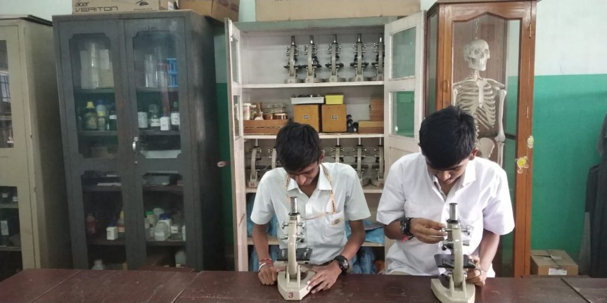

Students Services
A. Guidance and Counseling Services:
- Individual Inventory:
Data may be used to check students who may need counseling or specialized guidance services.
- Group Counseling:
The groups are facilitated to form intimate and growth-promoting relationships in which they accept and support one another in the process of resolving and coping with difficulties and concerns they disclose.
- Group Guidance:
It is instructional in nature that aims to prevent personal or social difficulties through knowledge and skills in solving a difficulty.
- Testing:
The testing program aims at helping the students to gain understanding of their needs and personality, to realize their potentials, to identify their strengths and weaknesses, and to know these implications in their lives.
- Career Guidance:
It is designed to assist students in their career planning and choices.
- Personality Education Program:
It is designed to facilitate total personality development, psychological wellness, life adjustment of students. The students undergo homeroom modular classes throughout the school year.
B. Health Services
- To safeguard health of the school community, the school has the following facilities to be used properly, namely; water supply, comfort rooms, adequate trash containers, school clinic.
- First Aid treatment is extended to one who needs it by any school personnel. In the clinic is a medicine cabinet for first aid treatments.
- In case a student feels sick while attending classes, he/she accomplishes Permit to Leave Campus Form and is communicated first to the parent/ guardian. If necessary, someone from the school accompanies the sick child.
- There is an annual medical-dental services but guardians are still encouraged to bring children for complete check-up.
- In emergency cases when a student needs immediate hospitalization, the school brings him/her to the hospital. Guardian is informed of the action right away.
C. Library Services
A student's learning is supported by school facilities One of these that is expected to be constantly be used is the library Library activities broaden one's world and knowledge. For orderly use of the library, the
following are the General Library Regulations.
- Upon entrance, the student registers name on the logbook. He/she approaches the librarian and
asks for assistance.
- Before taking any book, ID is submitted to the librarian.
- General reference books like the dictionary,
encyclopedia and almanacs are not to be brought
out from the library.
- Home reading books maybe borrowed and renewed for a certain period. Always bring along the borrowed book for renewal.
- Magazines and books that are used have to be returned to their proper places.
- Borrowed library books and magazines are the sole responsibility of the borrower. These should be returned personally.
- Do not insert thick materials in the book. Use a suitable book mark. viii. A book maybe recalled at times when the school
needs the book borrowed.
- Bags, umbrellas and other things are left at the counter.
- Fines and Penalties.
Borrowers who do not return library books are subjected to fines set by the librarian.
- Library Manners.
- General courtesy in the library is always to be observed.
- Librarian's desk and premises are to be
respected.
- General order and study atmosphere are to be carried by observing silence and talking in low tone when necessary.
- No eating, loitering and unnecessary noise inside the library
- Cleanliness is to be maintained and personal trash
are to be put in one's pack for disposal at home.
- Suggestions for the improvement of the library are welcome.
D. Science Laboratory

- Upon entrance to the laboratory, student registers name on the logbook.
- Student is not allowed to enter the laboratory room unless permitted by the science teacher or authorized personnel.
- Damaged laboratory materials are to be reported
immediately to the science teacher, the laboratory
custodian.
- Any major or minor accident that happened in the laboratory needs to be reported to the teacher.
- LABORATORY GUIDELINES are provided to ensure safety and protection of the laboratory items.
- All laboratory materials are labeled properly especially the chemicals.
- Laboratory instructions are to be properly read and understood before starting working on any experiment.
- Laboratory materials are to be returned properly to the proper places
- Laboratory room is to be kept clean and orderly.
- Only proper apparatus for the required
experiment be used.
- Eating is not allowed inside the laboratory room.
- Laboratory safety measures are to be strictly observed.
E. School Canteen
The canteen is located within the school campus to serve the school community's food needs. It shall be the only food selling center in the school. At health breaks, a student cannot get out of the campus to buy food. The canteen personnel are members of the school community and thus, they are to be given utmost respect.
F. Athletic Equipment
Athletic equipment maybe brought out during physical education periods, practices and during recess and lunch breaks. However, borrowers during break periods shall write their name in the log book provided by the teacher-in-charge and shall be responsible in returning them. In case of loss or damaged of the sports equipment used by students without the consent of the teacher-in-charge, the students shall be liable of replacing the equipment of the
same kind.
G. School Pastoral Care Services
See Pastoral Services.